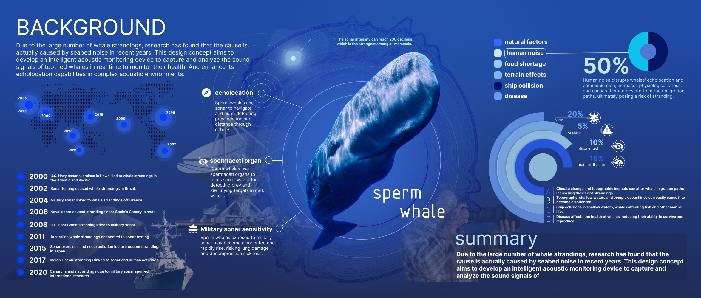
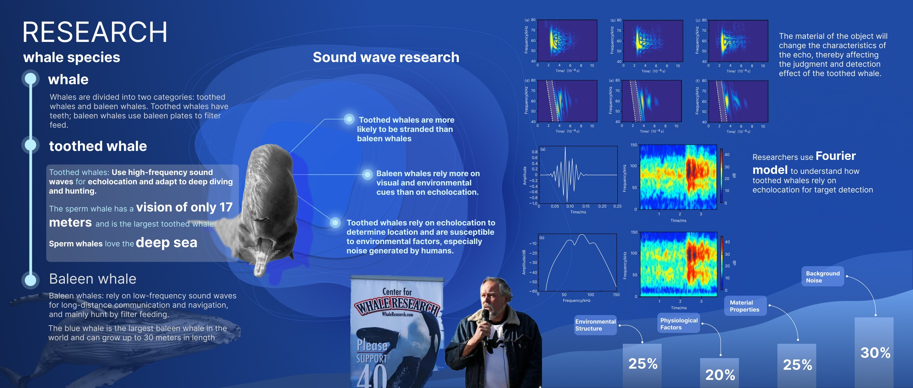
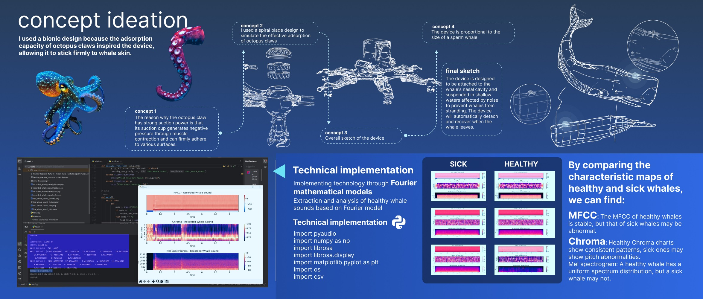
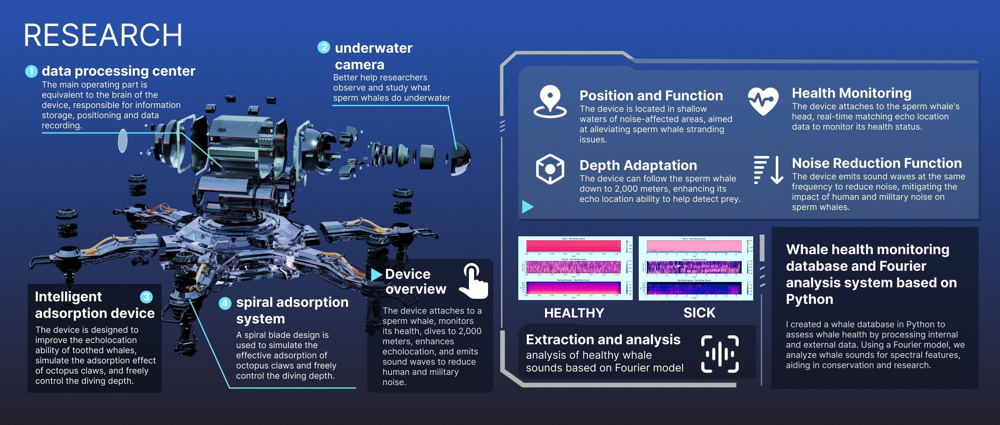
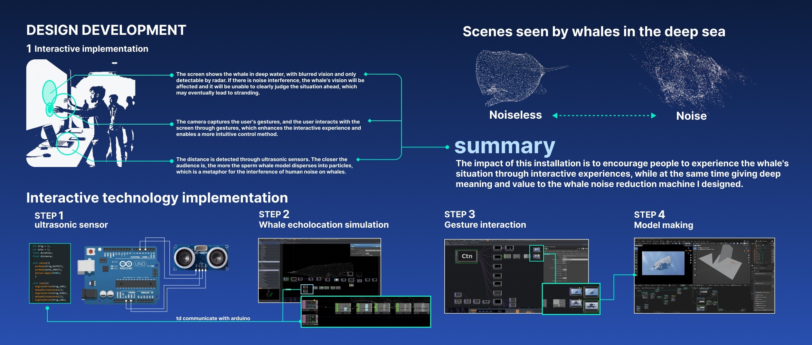
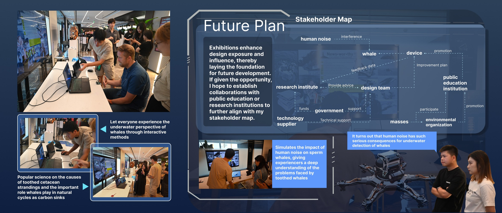

01 / Environmental technology
Ear Shield
A speculative acoustic monitoring device and public installation exploring how human underwater noise disrupts toothed whale perception.

Context
Toothed whales rely on echolocation for orientation, hunting and communication. Human-made underwater noise can interfere with this sensory system and increase stranding risk.
Challenge
The issue is invisible to most audiences. The project needed to translate underwater acoustic disruption into a tangible device concept and public-facing experience.
Process
I moved from whale and sound-wave research into bionic suction ideation, Python acoustic analysis, device system design, and an Arduino / TouchDesigner installation.
Outcome
The outcome is a speculative whale monitoring system and exhibition prototype that helps audiences understand how human noise affects whale perception.
Page-by-page evidence
Complete Ear Shield project archive
Each image is shown because it proves a specific design decision, research step or prototype development moment.






What Ear Shield demonstrates
Competencies
Problem framing, ecological research, systems thinking, speculative product logic, physical computing, visual prototyping, public communication.
2-minute story
I began with human underwater noise disrupting whale perception, researched sperm whale echolocation, translated the issue into a monitoring-device concept, and built an installation so audiences could experience acoustic disruption.
8-10 minute flow
Start with whale strandings and human noise. Explain sperm whale sound perception, show bionic suction ideation, Python analysis, device system design, Arduino/TouchDesigner prototype, exhibition interaction and stakeholder map.
Need confirmation
Individual or group status, exact duration, exhibition name/date, audio data source and expert feedback.